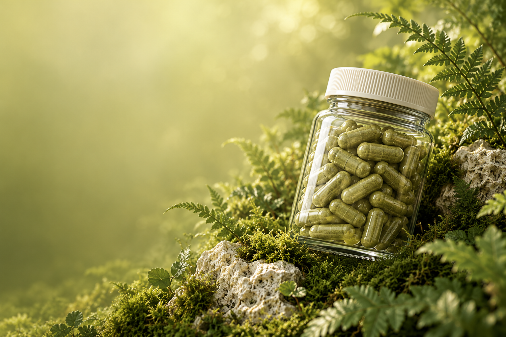

Poslouchejte sebe.
Kapsle, elixír, nebo superpotravina? Začněte formou, která se hodí do vašeho života.

Pečlivě vybraná příroda.
Pro váš každodenní dobrý pocit.
VYBRÁNO PRO VÁŠ KAŽDODENNÍ ŽIVOT
Každý jsme jiný. A tak je to správně.
Najděte to, co dává smysl právě vám.
MÉNĚ SLOŽITOSTÍ. VÍCE PŘIROZENOSTI.
V doplňcích stravy se nemusíte ztrácet. V Mijoli vybíráme kapsle, bylinné elixíry i superpotraviny s ohledem na složení, formu a každodenní použití.
Věříme v malé, pravidelné kroky. V prostor pro sebe. A ve výběr, kterému rozumíte.
TAK JEDNODUCHÉ, JAK TO ZNÍ
Kapsle, elixír, nebo superpotravina? Začněte formou, která se hodí do vašeho života.
Projděte si složení, doporučené užívání a upozornění na detailu produktu.
Vytvořte si prostor pro vlastní rituál. S respektem k doporučenému dávkování.
Vybírejte podle složení, formy a doporučeného použití. Podrobné informace najdete u jednotlivých produktů. Při nejistotě, užívání léků nebo specifických potřebách konzultujte výběr s lékařem či lékárníkem.
Otevřete detail produktu a přejděte na jeho úplné informace v obchodě Mijoli. Před užíváním se vždy řiďte údaji na obalu konkrétního výrobku.
Vyzkoušíte si výběr, košík i průchod objednávkou. Objednávka je pouze ukázková: nic neodesílá a neprobíhá žádná platba. Pro skutečný nákup použijte odkaz na produkt ve stávajícím obchodě Mijoli.
Aktuální možnosti a ceny zjistíte v košíku stávajícího e-shopu Mijoli. V tomto náhledu jsou způsoby dopravy a platby pouze pro vyzkoušení nákupního toku.